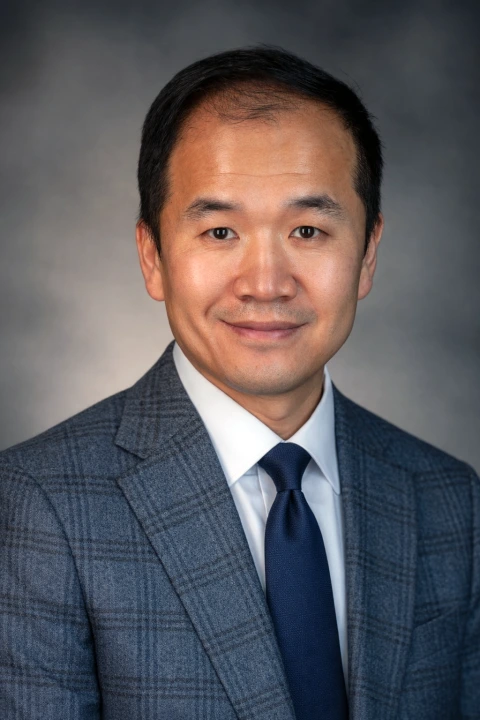

Researcher · Educator · Academic leaderUnderstanding aviation.
Understanding aviation.
Improving its future.
I study the economics, operations, and behavior of air transportation systems—with a focus on airports, airlines, passenger choice, and aviation data analytics.
Yi Gao · 高翼Director & Professor, School of Aeronautics
Kent State University

Yi Gao 高翼Aviation, through evidence.
38Journal publicationsListed on this website
$2.76MSponsored researchCombined project awards
9ACRP projectsPI, lead & senior roles
20+Graduate researchers mentoredMaster’s & doctoral researchers
Sponsored research represents combined project awards, including collaborative and subrecipient projects.
Questions that drive my work
About my research ↗Four perspectives on aviation.
01 / RESEARCH AREA
Air transportation economics & operations
Airline and airport performance, passenger behavior, competition, scheduling, and operational reliability.
Explore publications ↗02 / RESEARCH AREALoyalty & frequent flyer programs
How rewards, status, and program design shape traveler choice and airline strategy.
Explore publications ↗03 / RESEARCH AREAAviation safety
Safety behavior, reporting systems, and organizational practices for safer aviation.
Explore publications ↗04 / RESEARCH AREAAviation education
Curriculum, student learning, workforce preparation, and future aviation professionals.
Explore publications ↗Recent scholarship
From evidence to insight.
How emerging low-cost carriers choose airports ↗
The dynamics of public attention to aviation safety ↗
From the research group
Latest updates.
Elected Vice President of the University Aviation Association.
Our team attended the Collegiate Aviation Education Conference in Denton, Texas.
New studies on airline block times and Breeze Airways’ airport selection published.
A little about meResearch grounded
Research grounded
in aviation practice.
My name is Yi Gao. In Chinese, 高翼 means “high wing.” I am Director and Professor in the School of Aeronautics at Kent State University.
Before joining Kent State, I was an Associate Professor in Purdue University’s School of Aviation and Transportation Technology. I earned my Ph.D. in Technology at Purdue, specializing in Aviation Management.
Through research, teaching, and graduate mentorship, I connect academic inquiry with the practical challenges facing air transportation.